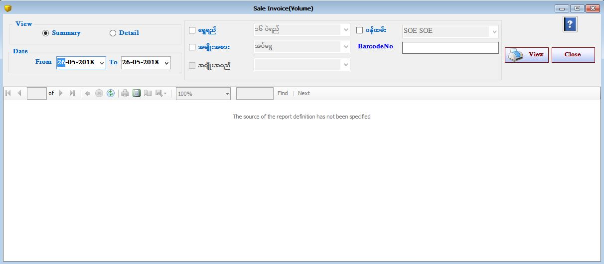

Sales Invoice Volume Return Setup

- Reports အောက်ရှိ Sale Invoice Volume Form ကိုဖွင့်ပါ။
- Sale Invoice Volume Report Form သည် Volume အလိုက် အရောင်းစာရင်းများကို ပြန်လည်ကြည့်နိုင်သော Form ဖြစ်သည်။
- အရောင်းစာရင်းချုပ်(Volume) ကို ကြည့်လိုပါက Summary ကို on ထားပါ။
- အရောင်းစာရင်းချုပ်(Volume) တွင် Gold Quality အလိုက်၊ Item Category အလိုက် Summary ပြသပေးမည်ဖြစ်သည်။
- Detail ကြည့်လိုပါက Detail ကို on ထားပါ။
- Detail တွင် ByDate, ByBarcode အရ နှစ်မျိုးကြည့်နိုင်ပါသည်။ ByDate ကို ရွေးပြီး View Button နှိပ်ပါက Date အလိုက် အရောင်းစာရင်းများကို ကြည့်ရှုနိုင်မည်ဖြစ်သည်။ Barcode ကိုရွေးပြီး View Button နှိပ်ပါက Barcode အလိုက် အရောင်းစာရင်းများကို ကြည့်ရှုနိုင်မည်ဖြစ်သည်။
- မိမိကြည့်လိုသော From Date နှင့် To Date ကိုရွေးချယ်ပေးရပါမည်။ From Date နှင့် To Date အတွင်းရောင်းထားသော အရောင်းစာရင်းများကိုတွေ့ရမည်ဖြစ်သည်။
- Gold Quality အလိုက်ကြည့်လိုပါက Gold Quality ၏ check box ကို onပြီးမိမိကြည့်လိုသော Gold Quality ကိုcombo box တွင်ရွေးချယ်ပြီးကြည့်ရှုနိုင်သည်။ ထိုနည်းအတိုင်း အခြားသော checkbox များကို ရွေးချယ် ကြည့်ရှုနိုင်ပါသည်။